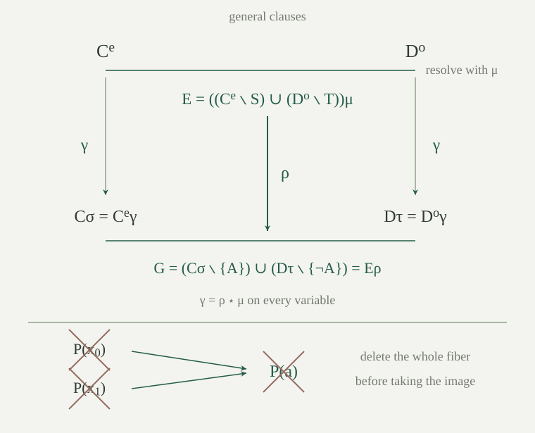

Fix a first-order language \(L\) and variables \(x_0,x_1,\ldots\). We use the actual relation atoms \(R(t_0,\ldots,t_{k-1})\), including zero-ary relations, and the signed finite-set clauses. A positive literal is an atom \(A\); a negative literal is \(\neg A\). Logical equality is excluded until the equality corollary below. Each asserted clause is universally quantified over its finitely many occurring variables. Write \(M\models C\) when \(C\) is true at every assignment in the nonempty structure \(M\), and \(M\models\Gamma\) when this holds for every \(C\in\Gamma\).
The instance \(C\sigma\) under a substitution \(\sigma\) is the finite image of \(C\) under simultaneous term substitution in its atoms; signs stay fixed. Its literals form a set, so several literals can have one image. A ground substitution sends every variable to a closed term. Write \(H_L\) for the set of closed terms and \(\Gamma^g\) for all ground instances of members of \(\Gamma\). The substitution identities on terms give the same identities on atoms, literals and clauses:
The semantic substitution theorem says that \(C\sigma\) at an assignment \(v\) has the truth value of \(C\) at \(x\mapsto\sigma(x)^M_v\). In particular, every instance of a universally true clause is universally true. This concerns the actual first-order clause formula, including negative literals and the empty disjunction.
Put \(e(n)=2n\) and \(o(n)=2n+1\). Both maps are injective and their images are disjoint. Write \(C^e\) and \(D^o\) for the clauses obtained by replacing \(x_n\) by \(x_{e(n)}\) and \(x_{o(n)}\), respectively. Given any substitutions \(\sigma,\tau:\mathbb N\to H_L\), there is a single ground substitution \(\gamma\) such that
Define \(\gamma(2n)=\sigma(n)\) and \(\gamma(2n+1)=\tau(n)\). Every natural number has exactly one of these forms, so this is a total map. Equivalently, use the parity of \(k\) and the quotient \(\lfloor k/2\rfloor\). For each term \(t\), induction gives \(t^e\gamma=t\sigma\): the variable case is the defining even identity, and function applications preserve the identities for all arguments. The odd case is the same argument with \(\tau\). Applying it to atoms and taking finite images proves both clause identities.
This construction also works when the images of \(\sigma,\tau\) have variables in any one fixed alphabet. The two parent clauses are now standardized apart. We repeat this operation at every inference, even if both parents are copies of the same clause. The maps are injections into disjoint subsets, not bijections onto the whole variable stock.
A substitution unifies a nonempty finite family \(\mathcal A\) of atoms if all atoms in \(\mathcal A\) become the same syntactic atom. It is a most general atom unifier if it unifies \(\mathcal A\) and every other unifier \(\sigma\), including a ground one, factors as \(\sigma=\rho\star\mu\) on every variable. Whenever \(\mathcal A\) has a unifier, it has such a most general unifier \(\mu\).
Substitution changes neither a relation symbol nor its arity. Existence of one unifier therefore implies that all members have the same relation symbol \(R\) of one arity \(k\). Choose one member \(R(s_0,\ldots,s_{k-1})\). For each \(R(t_0,\ldots,t_{k-1})\in\mathcal A\), list the \(k\) equations \(s_i\doteq t_i\). This is a finite problem \(P\) on the shared terms. A substitution unifies \(P\) if and only if it unifies \(\mathcal A\): equality of actual relation atoms with the same head is exactly equality of their argument tuples.
The term-unification theorem supplies a successful answer \(\mu\), with all-variable factorization for every unifier of \(P\). The equivalence just proved transfers soundness and factorization to the atoms. For zero-ary \(R\), \(P\) has no equations and the identity works. For an arbitrary language this is a mathematical existence argument using classical equality; an executable call additionally needs the symbol-equality assumptions of the unification algorithm.
Given clauses \(C,D\), first form \(C^e,D^o\). Choose nonempty finite subsets \(S\subseteq C^e\) and \(T\subseteq D^o\), with every member of \(S\) positive and every member of \(T\) negative. Suppose the atoms of all literals in \(S\cup T\) have a most general unifier \(\mu\). Their relation symbols and arities must agree. The generalized first-order resolvent for these choices is
The resolution inference infers exactly \(E\) from \(C,D\). It combines the chosen same-sign literals into one common literal before canceling the opposing pair; this combination is called factoring. Other literals are retained, even if further coincidences occur after \(\mu\). We do not delete several different pivots: all selected atoms must become one and the same atom.
A first-order resolution derivation from a set \(\Gamma\) is a finite tree whose leaves belong to \(\Gamma\) and whose internal nodes are these inferences. Write \(\Gamma\vdash_{\mathrm{FO}}E\). A refutation has root \(\varnothing\). There is no implicit weakening or arbitrary-instance rule: the only constructors of a derivation are a premise and this specified inference.
If \(\Gamma\vdash_{\mathrm{FO}}E\), every nonempty \(L\)-structure satisfying all universal clauses in \(\Gamma\) satisfies \(E\). In particular, a first-order resolution refutation implies unsatisfiability.
Consider one inference with the choices in . Fix an arbitrary structure \(M\) in which both parents are universally true, and an arbitrary assignment \(v\) to the variables of its conclusion. The clauses \(C^e\mu,D^o\mu\) are true at this same assignment by semantic substitution: use the parent assignments \(n\mapsto\mu(e(n))^M_v\) and \(n\mapsto\mu(o(n))^M_v\).
All selected positive literals have one atom \(A\mu\); all selected negatives negate that same atom. If this atom is false at \(v\), a true literal of \(C^e\mu\) comes from outside \(S\), so it occurs in \(E\) and is true there. If the atom is true, a true literal of \(D^o\mu\) comes from outside \(T\), with the same conclusion. This proves truth of the exact finite-image clause \(E\) at \(v\). Most-generality was not needed for soundness.
Induct on the finite derivation tree. Premises are universally true by hypothesis and the one-step argument preserves that assertion at every internal node. An empty root would be a true empty disjunction, which is impossible.
Let \(a\) be a constant, \(f\) unary, and \(P,Q\) unary relations. Refute the universally asserted clauses
The fresh copies of the first pair are \(C^e=\{P(x_0)\}\) and \(D^o=\{\neg P(f(x_1)),Q(x_1)\}\). Select their \(P\)-literals. The substitution \(\mu(x_0)=f(x_1)\), fixing every other variable, is most general: any unifier satisfies \(\sigma(x_0)=f(\sigma(x_1))\), so it factors through \(\mu\) using \(\rho=\sigma\). The resolvent is \(\{Q(x_1)\}\).
At the next inference this clause is copied by \(e\), giving \(\{Q(x_2)\}\), while \(F^o=F\). The substitution sending \(x_2\) to \(a\) and fixing all other variables is a most general unifier of the two selected atoms. Both remainders are empty, so the conclusion is \(\varnothing\). The two inferences form the required finite tree.
For a binary relation \(B\) and a constant \(a\), consider the two universal clauses
Why are they inconsistent, and how can one generalized inference refute them? What happens if exactly one literal is selected in each original parent?
At \(x_0=a\), the first clause requires \(B(a,a)\) and the second its negation. After standardizing apart, select all two positive literals of \(C^e\) and all two negative literals of \(D^o\). A unifier must send both \(x_0,x_1\) to \(a\), and the substitution doing exactly this is most general. All remainders disappear, giving \(\varnothing\).
If only one literal from each parent is selected, the pairs with different argument shapes force both variables to \(a\), leaving \(\{B(a,a),\neg B(a,a)\}\). The pairs with identical shapes identify the two variables and leave either \(\{B(y,y),\neg B(y,y)\}\) or \(\{B(a,y),\neg B(a,y)\}\). Every such single inference is tautological. The universal clauses are the two directions of the barber condition \(B(a,y)\leftrightarrow\neg B(y,y)\). Their one-literal ground instances illustrate exactly what is lost if lifting removes just one preimage of a collapsed pivot. The generalized rule handles the required factoring directly.
In the language with one constant \(a\), one unary relation \(P\), and no other symbols, the two clauses
have no model. They have no refutation in the restriction of our calculus requiring \(S,T\) to be singletons at every inference, even though that restriction still uses most general unifiers and collapses duplicate literals in the resulting finite set.
Setting both variables to the same domain element makes the first clause assert \(P\) there and the second deny it, so nonemptiness excludes a model. For the proof-theoretic claim, use the invariant that every derived clause has exactly two literals \(\varepsilon P(x_i),\eta P(x_j)\) with distinct variables \(i\ne j\); either sign is allowed. Both premises have this form.
In a restricted inference, the even and odd copies have four distinct variables. One variable from each parent is selected, leaving two distinct unselected variables \(r,s\). A most general unifier \(\mu\) of the selected atoms must send \(r,s\) to distinct variables. To see this without assuming a particular algorithmic answer, choose a unifier \(\delta\) that sends the selected variables to one fresh variable and \(r,s\) to two other distinct variables. Factor it as \(\rho\star\mu\). Since a function application remains a function application under substitution, a term that becomes a variable must itself be a variable. Thus \(\mu(r)\) and \(\mu(s)\) are variables; they cannot be equal, since their further \(\rho\)-images are distinct. Consequently the resolvent again has two distinct literals of the required form.
Tree induction preserves the invariant, so the empty clause never occurs. In the generalized calculus, select both literals in both fresh parents; identifying all four variables is a most general unifier and the remainders are empty. Factoring therefore restores a refutation that the single-pair restriction cannot supply.
For a map \(f:X\to Y\), a finite set \(U\subseteq X\), and \(y\in Y\), put \(U_y=\{u\in U:f(u)=y\}\). Then
Moreover, a finite image \(f[U]\) is empty if and only if \(U\) is empty. Neither assertion requires \(f\) to be injective.
A member of the left side is \(f(u)\) for some \(u\in U\) with \(f(u)\ne y\), so it lies in the right side. Conversely, a member of the right side has a preimage \(u\in U\); because its image differs from \(y\), that preimage is outside \(U_y\). This proves the equality. If \(U\) has a member, its image has that member's image; an empty \(U\) plainly has empty image. Thus emptiness is also reflected by the image.
In particular, substituting in \(C\) and removing a ground literal agrees with first deleting its whole fiber in \(C\). Removing only one preimage need not work: for \(\{P(x_0),P(x_1)\}\) and a substitution sending both variables to \(a\), deleting either preimage alone leaves the ground literal \(P(a)\).
Let \(C,D\) be first-order relation clauses, let \(\sigma,\tau\) be ground substitutions, and suppose \(A\in C\sigma\), \(\neg A\in D\tau\). There are a generalized resolvent \(E\) of \(C,D\) and a ground substitution \(\rho\) such that the exact propositional resolvent satisfies
Standardize the parents apart and combine their substitutions as in , so \(C^e\gamma=C\sigma\) and \(D^o\gamma=D\tau\). Define the full pivot fibers
The ground pivot occurrences give a preimage in each parent, so both sets are nonempty. Substitution preserves signs, hence \(S\) consists of positive literals and \(T\) of negative ones. All their atoms become \(A\) under \(\gamma\); in particular they have one relation symbol and arity. By , choose a most general atom unifier \(\mu\). Its factorization applies to this ground \(\gamma\), so some ground \(\rho\) satisfies \(\gamma(x)=\mu(x)\rho\) for every variable.
Use these \(S,T,\mu\) in the rule and put \(U=(C^e\setminus S)\cup(D^o\setminus T)\), so \(E=U\mu\). Composition of substitution gives \(E\rho=U\gamma\). Finite images preserve unions; the exact fiber equality in therefore gives
Insert the two combined-substitution identities to obtain the claimed equality. This calculation removes all preimages of each selected ground literal and retains every other image. It proves equality with the ground resolvent, not merely containment in it.

Let \(\Delta\subseteq\Gamma^g\) be a finite set of ground clauses. If the existing propositional calculus derives a ground clause \(G\) from \(\Delta\), then some \(E\) with \(\Gamma\vdash_{\mathrm{FO}}E\) has a ground instance \(E\rho=G\). In particular, a propositional refutation from \(\Delta\) yields a first-order refutation from \(\Gamma\).
Induct on the finite propositional proof tree, with the assertion just stated for each root and its entire subtree. At a premise \(G\in\Delta\), choose \(C\in\Gamma\) and a ground \(\sigma\) with \(C\sigma=G\), which exist because \(\Delta\subseteq\Gamma^g\). The single-leaf first-order derivation of \(C\) and this substitution prove the assertion.
At a resolution node, the induction hypotheses give first-order derivations of parents \(C,D\), together with their individual ground substitutions. The node's ground pivot belongs positively to one instance and negatively to the other. Apply and append its one first-order inference to the two supplied trees. Its conclusion \(E\) has exactly the required ground instance. The fresh even and odd copies are chosen at this node regardless of names or clauses shared by the subtrees.
If \(G=\varnothing\), its lifted clause \(E\) also equals \(\varnothing\): clause substitution is a finite image, and reflects emptiness. The resulting first-order tree is a refutation using precisely the stated inference rule.
Assume \(H_L\ne\varnothing\). For every set \(\Gamma\) of universally asserted relation clauses over \(\mathbb N\),
A refutation excludes a model by . Conversely, the finite ground-refutation consequence of Herbrand's theorem supplies a finite \(\Delta\subseteq\Gamma^g\) with a propositional resolution derivation of \(\varnothing\). Apply . This yields a finite first-order derivation whose root itself is empty.
The assumption on closed terms is exactly the one needed for the Herbrand step. No cardinality or computable presentation of the signature has been used. The conclusion is existence of a finite refutation; it supplies neither a uniform enumeration procedure for an arbitrary signature nor a termination theorem for satisfiable inputs.
Fix an ordinary language \(L\), its fixed equality-relation language \(L^E\), and any set \(\Delta\) of original signed clauses with equality and relation atoms. Let \(\Delta^E\) be their concrete clause translation, and let \(\mathcal E_L\) be the actual equality axiom clause family. If \(H_{L^E}\ne\varnothing\), then
The concrete equality-clause reduction gives that \(\Delta\) has a model if and only if \(\Delta^E\cup\mathcal E_L\) has a nonempty clause model. Its native-formula truth bridge uses the exact translation of every signed atom. An ordinary model expands by interpreting \(E\) as identity; a model of the translated clauses and all congruence axioms gives the ordinary quotient model. Apply in \(L^E\) to obtain the displayed equivalence.
The refutation uses exactly the existing equality-free rule. Logical equality has been replaced by \(E\) together with all five axiom families; it is never valued as an unconstrained relation atom.